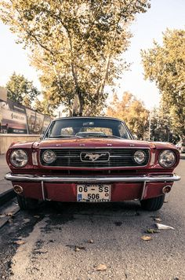
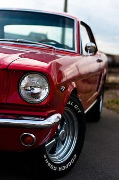
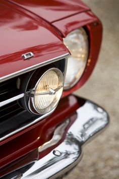
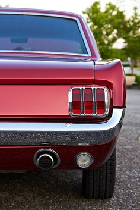
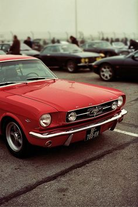

Primeira geração (1964-1973)
Autor, publicado em 4 de março de 2020
Lançado em Abril de 1964 já como modelo 1965 o Ford Mustang foi apresentado em duas versões: Conversível e Coupé 2 portas. Projetado e concebido para satisfazer todos os gostos, poderia vir equipado com um modesto motor 6 cilindros de 2,8L com 101HP até um V8 de 4,8L com 271HP.
Após 6 meses, foi apresentada a versão Fastback, com forte apelo esportivo. Não houve mudanças significativas para o ano de 1966, quando o carro completou o total de 1 milhão de unidades vendidas, comprovando o enorme sucesso alcançado.
    Segunda geração (1974-1978)
Autor, publicado em 4 de março de 2020
Lee Lacocca, que foi um dos responsáveis pelo desenvolvimento do primeiro Mustang, se tornou presidente da Ford Motor Company em 1970 e pediu para os engenheiros dessa empresa desenvolverem um Mustang menor e mais econômico, esse carro deveria ser apresentado ao público em 1974.
O novo Mustang foi introduzido em 21 de setembro de 1973, dois meses antes da crise do petróleo de 1973, isso permitiu com que esse carro competisse contra carros Cupê importados como, o Toyota Celica japonês e, o Ford Capri europeu. No primeiro ano de mercado esse Mustang vendeu 385,993 unidades.
Terceira geração (1979-1993)
Autor, publicado em 4 de março de 2020
O Mustang 1979 foi baseado na plataforma 'Fox Body'. A carroceria e a distância entre eixos maiores do que as do Mustang de geração anterior permitiram um espaço maior para os passageiros, porta-malas com capacidade aumentada e compartimento do motor maior.
O Mustang de terceira geração foi equipado com dois estilos de frente diferentes, de 1979 a 1986 possuía quatro faróis que eram conhecidos pelos entusiastas como ''quatro olhos''. De 1987 a 1993 o Mustang adotou uma frente moderna para a época, passando a não usar mais grade.
Quem sou eu?
Dono é anônimo, e não quer ser identificado.

{kind=link}
{kind=link}
{kind=link}
{kind=link}
{kind=link}